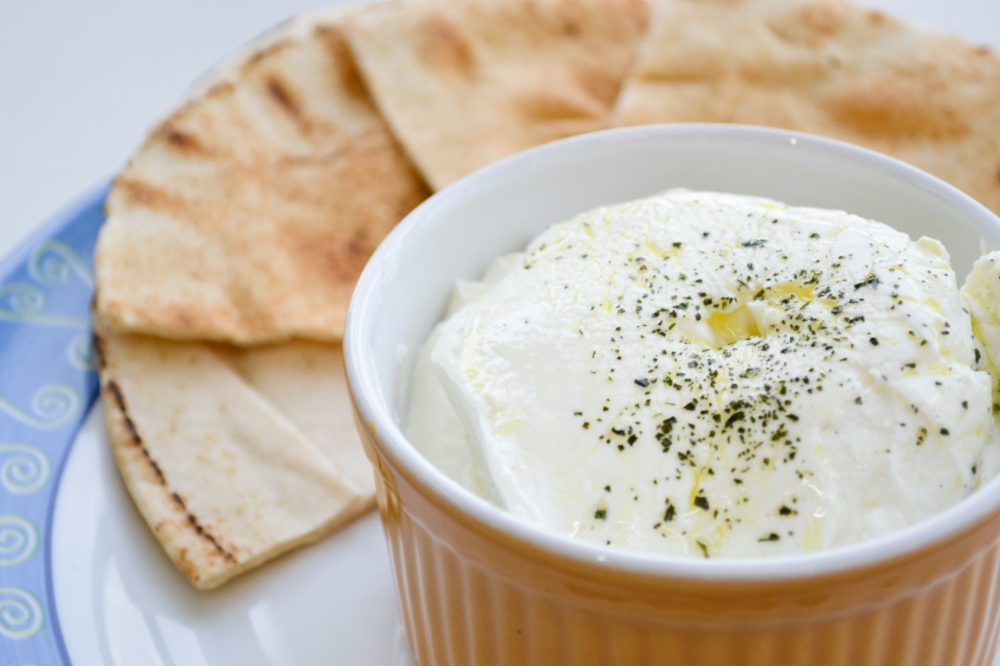

Tempo de preparo: 6 a 8 horas.
- 1 litro de leite
- 1kg de sabão em pó
- 2 colheres(sopa) de leite em pó integral
- 1 iogurte natural
- Canela e açucar(ou mel), se desejar
- O ideal é fazer à noite, pois deverá deixar descansar o preparo por horas.
- Ferva o leite e espere esfriar um pouco, até conseguir colocar o dedo no leite e contar até 10.
- Enquanto o leite ferve, misture bem o leite em pó no iogurte até formar um creme.
- Faça isso na vasilha onde pretende que fique a coalhada.
- Eu uso um pirex redondo e alto, com tampa.
- Despeje o leite, já na temperatura ideal, sobre esse creme que está na vasilha.
- Misture bem.
- Tampe bem, embrulhe em bastante jornal e deixe amanhecer.
- De manhã (ou depois de 6 a 8 horas) você pode abrir para conferir se ficou consistente.
- Costuma ficar como um iogurte.
- Leve à geladeira e sirva gelado, com açúcar ou mel, e canela, se desejar.